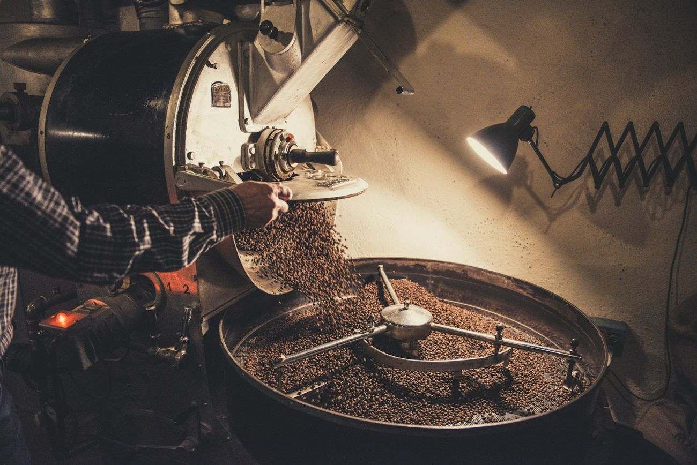
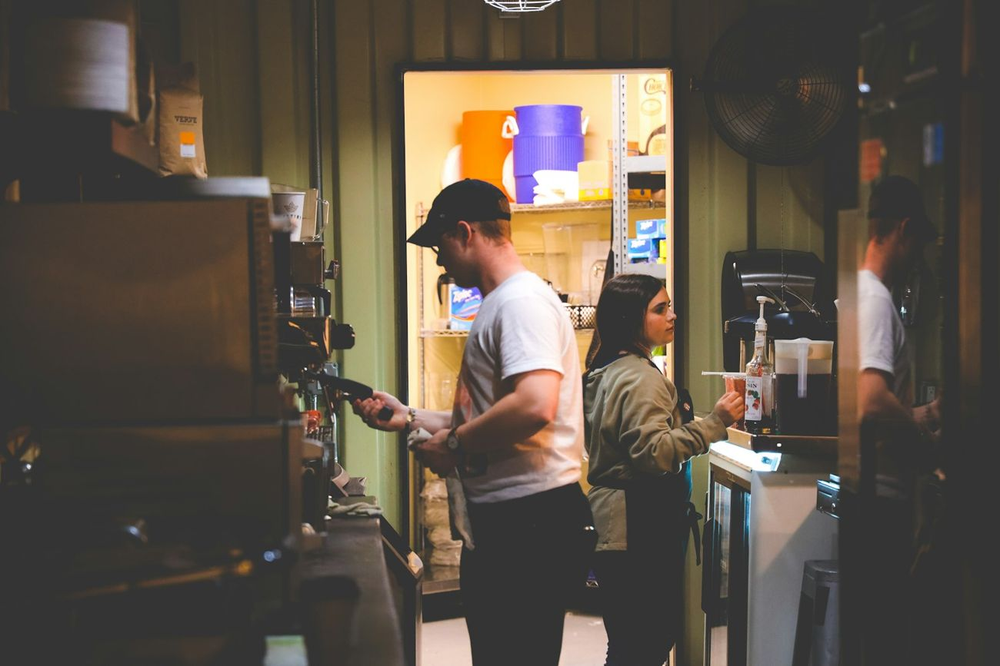

О нас
Обжарка
Мы обжариваем на 15-килограммовом барабанном ростере раз в неделю. Каждый лот сначала проходит 5–7 пробных обжарок, пока не найдём профиль, в котором он раскрывается лучше всего.

Профиль обжарки
Так выглядит обжарка Эфиопии Иргачеффе: температура зерна по минутам. Светлая обжарка — короткое развитие после первого крэка.
Сушка · 0:00–4:10Зерно теряет влагу и желтеет, до 150 °C.
Майяр · 4:10–8:30Сахара и аминокислоты дают цвет и сладость.
Развитие · 8:30–10:00После первого крэка — 1:30 для кислотности и цветов.
Неделя обжарочной
Поэтому кофе приходит свежим: между обжаркой и отправкой — меньше суток.
пн–втЗаказыСобираем заказы до вторника 23:59.
средаОбжаркаОбжариваем ровно столько, сколько заказали.
четвергОтправкаФасуем в пачки с клапаном и отдаём в СДЭК.
пт–пнУ васКофе раскрывается на 5–10 день после обжарки.
